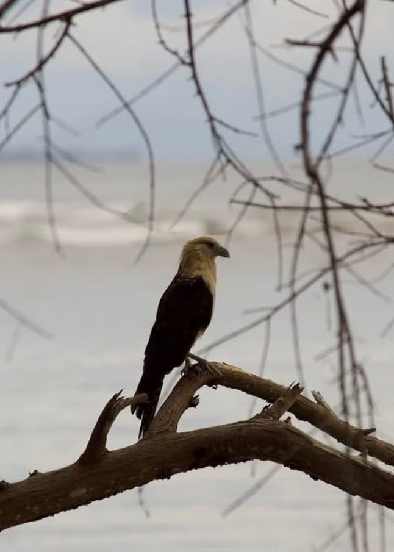

Aspecto físico
Presenta una cabeza y cuello de tonalidades amarillentas, contrastando con otras partes más oscuras de su plumaje.
AVES • BIODIVERSIDAD • TAXONOMÍA
Milvago chimachima
Conoce una de las aves rapaces de la familia Falconidae y descubre sus características, hábitat, alimentación, comportamiento, clasificación científica e importancia dentro de los ecosistemas.
Explorar especie ↓
Caracara Cabezamarillo
“Una especie que forma parte de la biodiversidad de nuestros ecosistemas.”
CONOCIENDO LA ESPECIE
El Caracara Cabezamarillo, cuyo nombre científico es Milvago chimachima, es un ave rapaz perteneciente a la familia Falconidae.
Es una especie que puede adaptarse a diferentes ambientes y aprovechar diversos recursos disponibles en su entorno.
Su presencia forma parte de las relaciones alimentarias de los ecosistemas donde habita, contribuyendo al funcionamiento natural de estos ambientes.
CLASIFICACIÓN CIENTÍFICA
La taxonomía permite identificar y organizar a los seres vivos de acuerdo con sus características y relaciones biológicas.
IDENTIFICACIÓN
Presenta una cabeza y cuello de tonalidades amarillentas, contrastando con otras partes más oscuras de su plumaje.
Pertenece a la familia Falconidae, grupo que incluye diferentes aves rapaces.
Puede aprovechar distintos ambientes y recursos alimenticios, mostrando una gran capacidad de adaptación.
Se relaciona principalmente con zonas abiertas, áreas rurales, pastizales y bordes de bosques.
VIDA EN LA NATURALEZA
El Caracara Cabezamarillo puede encontrarse en una variedad de ambientes, especialmente aquellos con espacios abiertos.
Puede utilizar pastizales, sabanas, zonas rurales, áreas agrícolas y bordes de bosques.
Su distribución comprende diferentes regiones de Centroamérica y Sudamérica.
NUTRICIÓN
Es una especie oportunista, por lo que puede aprovechar diferentes fuentes de alimento disponibles en su ambiente.
VIDA Y CONDUCTA
Puede permanecer atento a su entorno en busca de oportunidades de alimentación.
Puede utilizar diferentes ambientes y aprovechar los recursos disponibles.
Como ave rapaz, utiliza el vuelo para desplazarse y explorar su entorno.
CICLO DE VIDA
Como otras aves, el Caracara Cabezamarillo se reproduce mediante huevos. La reproducción y cuidado de las crías forman parte importante de su ciclo de vida.
SU PAPEL EN LA NATURALEZA
El Caracara Cabezamarillo forma parte de las cadenas alimentarias de los ecosistemas donde vive.
Al alimentarse de diferentes organismos y aprovechar carroña, participa en procesos naturales que forman parte del equilibrio ecológico.
Estudiar estas especies permite comprender mejor la biodiversidad y la importancia de conservar los ecosistemas.
PROTECCIÓN
Esta categoría corresponde a la clasificación utilizada por la Lista Roja de la UICN para especies que no cumplen actualmente los criterios de categorías de mayor riesgo.
EN RESUMEN
INFORMACIÓN CONSULTADA
La información taxonómica y científica debe ser consultada y contrastada mediante fuentes especializadas.